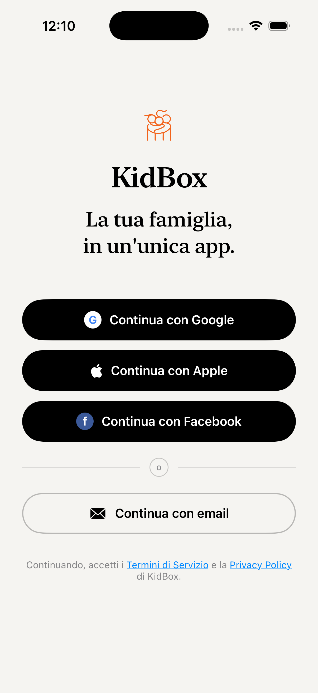
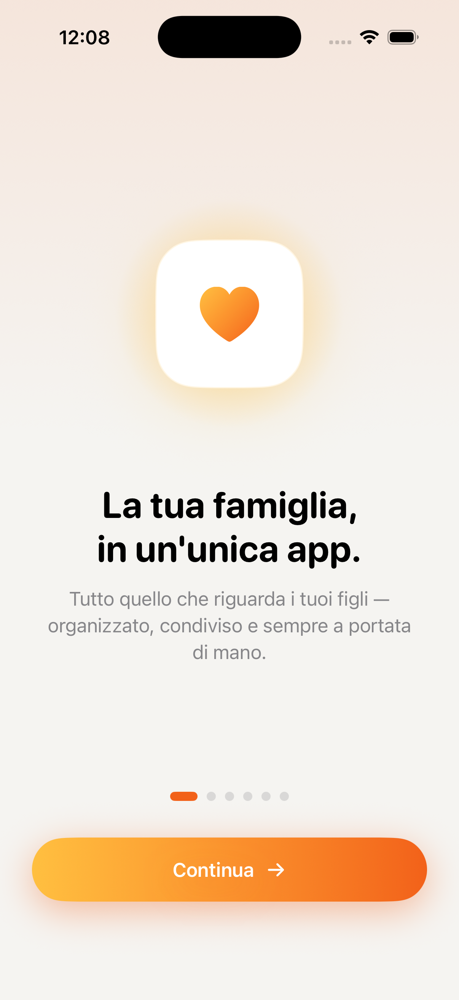
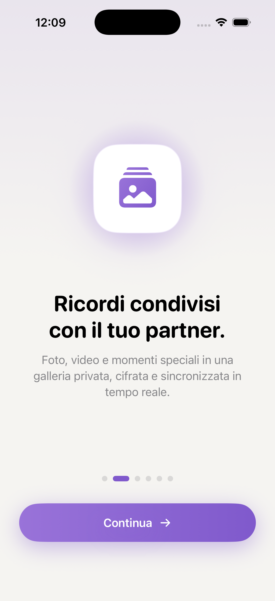
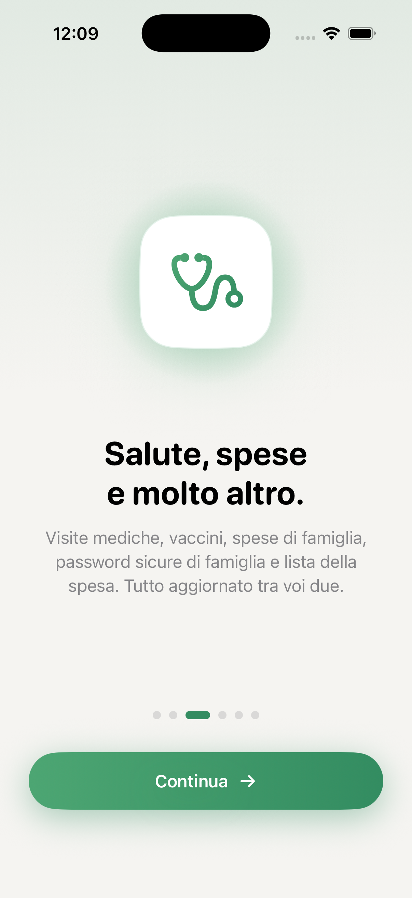
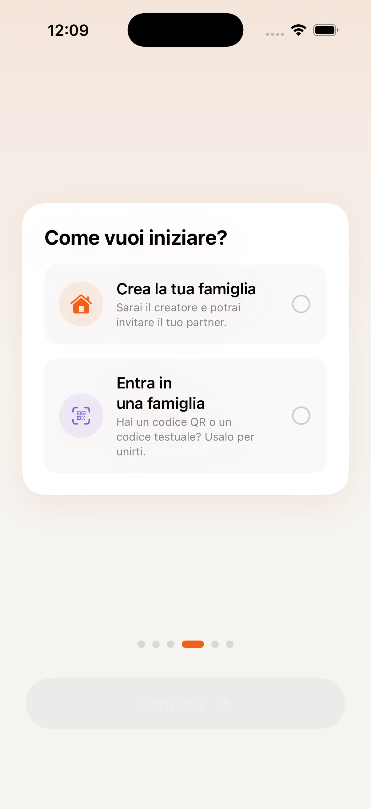

Come usare KidBox
Tutto quello che ti serve per sfruttare al massimo KidBox — funzionalità per funzionalità, con screenshot dell'app.
Hai un dubbio su come funziona una funzionalità? Chiedi direttamente all'Assistente AI dentro l'app — conosce KidBox nei minimi dettagli e può guidarti passo dopo passo su qualsiasi cosa.
Supporto affidato a un agente AI. Se qualcosa non funziona o hai bisogno di aiuto, l'agente di supporto integrato nell'app cerca di risolvere il problema in tempo reale. Se la situazione richiede un intervento umano, ti guida passo dopo passo per inviare una mail al team KidBox — che si tratti di un malfunzionamento, di una richiesta per nuove funzionalità o di un servizio non disponibile.
Report automatici di malfunzionamento. Per aiutarci a migliorare l'app, KidBox può inviare report anonimi in caso di errori o comportamenti anomali — solo con la tua esplicita autorizzazione. Puoi abilitare o disabilitare questa opzione in qualsiasi momento da Profilo → Impostazioni → Privacy → Report diagnostici.
Primo accesso
Dalla registrazione alla tua prima famiglia configurata — bastano pochi minuti. Puoi accedere con Google, Apple, Facebook o email.
Cerca "KidBox" oppure usa il link diretto nella pagina principale. L'app è gratuita — alcune funzionalità avanzate richiedono un piano Pro o Max.
Nella schermata di login puoi scegliere tra Google, Apple, Facebook o email + password. Se usi "Accedi con Apple" il tuo indirizzo email rimane privato.
Al primo accesso una serie di schermate introduttive ti mostra cosa puoi fare con KidBox: chat, documenti, salute e spese in un unico posto.
Puoi creare una nuova famiglia e invitare il tuo partner (o altri familiari) tramite link o codice, oppure inserire un codice ricevuto da qualcuno per unirti alla sua famiglia.
Aggiungi nome, foto e le informazioni di base. Puoi farlo subito o saltarlo e tornare in seguito da Profilo → Impostazioni.
Per invitare il partner, vai su Profilo → Famiglia → Invita membro. Riceverà una notifica con un link diretto per unirsi alla tua famiglia.

Accedi con Google, Apple, Facebook o email

La tua famiglia, in un'unica app

Ricordi condivisi con il tuo partner

Salute, spese e molto altro

Crea o unisciti a una famiglia

Configura il tuo profilo
Home & Dashboard
La schermata principale di KidBox è il tuo centro di controllo: un colpo d'occhio su tutto quello che conta per la famiglia oggi — eventi, promemoria, salute e notifiche degli agenti AI.
All'apertura dell'app trovi subito gli eventi di oggi, i todo in scadenza e gli eventuali aggiornamenti dai membri della famiglia. Tutto in un unico scroll, senza dover aprire sezione per sezione.
Ogni card della home è cliccabile e ti porta direttamente alla sezione corrispondente. Tocca una card evento per aprire il calendario, una card salute per i dettagli del profilo del bambino, e così via.
Se la Mente Proattiva ha rilevato qualcosa di importante — una scadenza imminente, un vaccino da fare, un promemoria — lo trovi evidenziato nella home con una card arancione dedicata.
Usa la barra in basso per spostarti tra le sezioni principali: Home, Chat, AI, Salute, e il menù "Altro" per accedere a Calendario, Todo, Spese, Wallet, Documenti e Password.

Dashboard principale con panoramica del giorno

Card interattive e aggiornamenti famiglia
Chat di famiglia
Messaggi privati e di gruppo cifrati, visibili solo ai membri della tua famiglia. Puoi condividere testo, foto, documenti e posizione.
Tocca l'icona 💬 nella barra in basso. Trovi subito la chat di gruppo famiglia e le conversazioni private con ogni membro.
Tocca la chat desiderata, scrivi nel campo in basso e premi Invia. I messaggi arrivano in tempo reale con notifica push su tutti i dispositivi dei familiari.
Tocca l'icona + accanto al campo testo per allegare foto dalla libreria, scattare una foto, inviare un documento o condividere la tua posizione in tempo reale.
Tocca + in alto a destra per aprire una chat privata con un membro specifico della famiglia o per creare un nuovo gruppo tematico.
Lista chat
Lista conversazioni
Chat di gruppo
Chat di gruppo famiglia
Condivisione media
Condivisione foto e file
Agenti AI
KidBox ha quattro agenti AI che conoscono la tua famiglia: l'Assistente di Famiglia, il Consulente di Salute, il Pianificatore di Viaggi e la Mente Proattiva.
Tocca l'icona 🧠 nella barra in basso. Trovi i quattro agenti disponibili — ognuno è specializzato in un ambito diverso della vita familiare.
Scrivi in linguaggio naturale, come faresti con un messaggio. Ad esempio: "Quali vaccini mancano a Sofia?" oppure "Crea una lista della spesa per il weekend" o ancora "Organizza un weekend a Roma per 4 persone".
Gli agenti non si limitano a rispondere — possono creare eventi nel calendario, aggiungere todo, registrare una visita medica o compilare una nota. Ogni azione viene mostrata prima di essere eseguita.
La Mente Proattiva ti invia ogni mattina un riepilogo degli impegni del giorno, scadenze imminenti e promemoria personalizzati per tutta la famiglia.
Gli agenti AI ricordano le conversazioni precedenti e imparano le abitudini della tua famiglia nel tempo. Più li usi, più diventano precisi.
Assistente famiglia
Assistente di Famiglia
Chat AI
Conversazione con l'AI
Azioni automatiche
Azioni eseguite dall'AI
Briefing mattutino
Briefing mattutino
Salute & Pediatria
Tieni traccia di visite mediche, esami, vaccini, cure e referti per ogni membro della famiglia. L'AI ti aiuta a interpretare i dati in linguaggio semplice.
Tocca l'icona 🩺 nella barra in basso. Trovi una panoramica con i profili sanitari di ogni membro della famiglia — bambini e adulti separati.
Tocca + Nuova visita, seleziona il membro della famiglia, inserisci data, specialista, diagnosi e note. Puoi allegare il referto in PDF o come foto.
Nella sezione Vaccini trovi il calendario vaccinale con i vaccini già fatti e quelli da fare. Per i farmaci puoi impostare promemoria per la somministrazione.
Tocca il pulsante Chiedi all'AI per ricevere spiegazioni in linguaggio semplice sugli esami o per sapere se i valori del referto sono nella norma. L'AI ha accesso alla storia clinica della famiglia per dare contesto.
Le risposte dell'AI sono informative e non sostituiscono il parere del medico. Per qualsiasi dubbio clinico rivolgiti sempre al tuo pediatra o medico di base.
Home salute
Panoramica salute
Visite mediche
Visite mediche
Vaccini
Registro vaccini
Consulente AI salute
AI consulente salute
Calendario
Tutti gli impegni della famiglia in un unico calendario condiviso, sincronizzato in tempo reale su tutti i dispositivi. Ogni membro ha il suo colore, così a colpo d'occhio sai di chi è ogni evento.
Accedi al Calendario dal menù "Altro" nella barra in basso. La vista predefinita è mensile — i giorni con eventi sono marcati con un punto colorato per ogni membro della famiglia coinvolto.
Puoi passare dalla vista mensile alla vista settimanale o giornaliera toccando i pulsanti in alto. La vista giornaliera mostra gli orari precisi di tutti gli impegni del giorno in una timeline.
Tocca + in alto a destra oppure tieni premuto su un giorno. Inserisci titolo, data, orario di inizio e fine, luogo e una descrizione opzionale. Seleziona quali membri della famiglia vuoi includere nell'evento — riceveranno una notifica.
Per ogni evento puoi aggiungere uno o più promemoria (es. 1 giorno prima, 2 ore prima, 15 minuti prima). Se l'evento si ripete — allenamento settimanale, riunione mensile — attiva la ripetizione e KidBox la gestirà in automatico.
Tocca un evento per aprire il dettaglio, poi tocca Modifica per cambiare orario, partecipanti o altri dettagli. Per gli eventi ricorrenti puoi scegliere se modificare solo quello selezionato o tutti i futuri.
Nell'Assistente di Famiglia puoi dire "Segna venerdì prossimo visita dal dentista per Sofia alle 16:30" oppure "Cosa ho in agenda questa settimana?" — l'AI crea, legge e organizza gli eventi al posto tuo.
Gli eventi creati nella sezione Salute (visite mediche, vaccini) appaiono automaticamente nel calendario con un'icona 🩺 dedicata — tutto è collegato.

Vista mensile con eventi famiglia

Vista settimanale con timeline

Creazione nuovo evento

Dettaglio e modifica evento

Promemoria e eventi ricorrenti
Todo & Routine
Liste di cose da fare condivise e routine quotidiane per tutta la famiglia. Ogni attività può essere assegnata a un membro specifico, con scadenza e promemoria — e l'AI può crearle e gestirle per te su semplice richiesta.
Accedi a Todo dal menù "Altro" nella barra in basso. Trovi le liste attive divise per categoria: attività personali, attività familiari condivise e la lista della spesa.
Tocca + Nuova lista, assegna un nome e scegli un colore o emoji identificativo. Puoi creare liste tematiche separate: "Spesa", "Fai da te", "Scuola bambini", "Lavori di casa".
Tocca + all'interno di una lista, scrivi l'attività e opzionalmente assegnala a un membro della famiglia, aggiungi una scadenza e un promemoria. Chi riceve l'assegnazione ottiene una notifica push.
Tocca il cerchio a sinistra di ogni attività per segnarla come completata — scompare dalla lista attiva ma rimane nell'archivio. Tieni premuto su un'attività per modificarla, spostarla o eliminarla.
Le Routine sono sequenze di attività che si ripetono ogni giorno (es. "Routine mattina bambini": colazione → zaino → denti → uscita). Crea la routine, aggiungi i passaggi nell'ordine corretto e attivala — ogni mattina si resetterà automaticamente per ricominciare.
La lista della spesa è condivisa in tempo reale con tutta la famiglia. Se il partner aggiunge un articolo mentre sei già al supermercato, lo vedi comparire istantaneamente. Spunta gli articoli man mano che li metti nel carrello.
Dì all'AI: "Aggiungi alla lista della spesa latte, pane e uova" oppure "Crea una routine serale per i bambini con bagno, pigiama e storia" — l'AI lo fa in un secondo senza che tu debba aprire la sezione.

Lista Todo principale

Dettaglio lista attività

Aggiungi nuova attività

Assegna a un membro della famiglia

Gestione Routine quotidiane

Passi della routine mattutina

Lista della spesa condivisa
Spese
Tieni traccia di tutte le spese familiari, divise per categoria e per membro. Analizza i trend mensili, monitora il budget e chiedi all'AI di fare il punto sulla situazione finanziaria della famiglia.
Accedi a Spese dal menù "Altro" nella barra in basso. Trovi subito il riepilogo del mese corrente: totale speso, suddivisione per categoria e contributo di ciascun membro della famiglia.
Tocca + in alto a destra, inserisci l'importo e scegli la categoria — Alimentari, Salute, Istruzione, Casa, Trasporti, Svago e altre. Aggiungi una nota descrittiva e, se vuoi, fotografa lo scontrino come allegato per tenere tutto documentato.
Ogni spesa può essere attribuita a un membro specifico della famiglia. Questo permette di capire chi spende cosa e di avere una visione chiara delle uscite individuali rispetto al totale familiare.
Scorri verso il basso nella schermata principale per vedere i grafici per categoria e l'andamento mese su mese. Puoi navigare tra i mesi precedenti per confrontare i periodi e identificare dove la famiglia spende di più.
L'Assistente di Famiglia ha accesso ai tuoi dati di spesa reali e può rispondere a domande come "Quanto abbiamo speso a maggio?", "In quale categoria spendiamo di più?" o "Confronta le spese di aprile e maggio" — in pochi secondi, senza fare calcoli.
Puoi anche registrare una spesa direttamente dall'AI: "Ho appena speso 45€ al supermercato" — l'assistente la categorizza e la salva automaticamente nella sezione Spese.

Panoramica spese del mese

Aggiungi nuova spesa

Spese suddivise per categoria

Statistiche e trend mensili
Wallet
Carte fedeltà, biglietti, abbonamenti e coupon — tutti in un posto solo, condivisi con la famiglia. Niente più carte fisiche dimenticate a casa o biglietti da cercare nelle email.
Accedi a Wallet dal menù "Altro" nella barra in basso. Trovi tutte le carte e i biglietti salvati, organizzati per categoria: Carte fedeltà, Biglietti, Abbonamenti, Coupon.
Tocca + in alto a destra e scegli il tipo di elemento da aggiungere. Puoi scansionare il codice a barre o QR direttamente con la fotocamera oppure inserire il codice manualmente. Assegna un nome e, se vuoi, un'icona per riconoscerlo subito.
Tocca la carta o il biglietto per aprire il dettaglio a schermo intero con il codice a barre o QR ben visibile — pronto per essere scansionato alla cassa. Lo schermo rimane attivo finché non chiudi la vista.
Ogni elemento del Wallet è automaticamente visibile a tutti i membri della famiglia. Così anche il partner può mostrare la carta fedeltà dal suo telefono, o i figli possono usare il biglietto del cinema senza che tu debba inviarglielo ogni volta.
Tieni premuto su un elemento per modificarlo, spostarlo di categoria o archiviarlo quando non serve più — ad esempio un biglietto di un evento già passato. Gli elementi archiviati restano accessibili ma non compaiono nella lista principale.
Ideale per carte fedeltà del supermercato, palestra, farmacia, tessere cinema, abbonamenti trasporti e coupon sconto. Un solo Wallet per tutta la famiglia — nessuno rimane senza la carta giusta al momento sbagliato.

Wallet con carte e biglietti della famiglia

Dettaglio carta con codice a barre

Aggiungi carta o biglietto

Scansione codice con la fotocamera
Documenti & Foto
Archivia documenti importanti in modo sicuro e condividili con chi vuoi — tutta la famiglia, solo alcuni membri, o tienili privati. Supporta PDF, immagini, Word, Excel e molto altro.
Accedi a Documenti dal menù "Altro" nella barra in basso. Trovi l'archivio organizzato in cartelle — puoi creare cartelle tematiche come "Scuola", "Assicurazioni", "Passaporti", "Medico".
Tocca + e scegli la sorgente: dall'app File di iPhone, dalla Libreria foto, oppure scatta direttamente con la fotocamera per fotografare un documento cartaceo. KidBox supporta PDF, JPG, PNG, Word e Excel.
Ogni documento ha tre livelli di visibilità che puoi scegliere al momento del caricamento o modificare in seguito:
🔒 Solo io — visibile unicamente a te, gli altri membri non lo vedono
👨👩👧 Famiglia — condiviso con tutti i membri della tua famiglia su KidBox
🔗 Link esterno — genera un link condivisibile con chiunque, anche fuori dall'app (es. medico, insegnante, nonni)
Tocca il documento, seleziona Condividi e attiva Genera link esterno. Otterrai un link che puoi inviare via WhatsApp, email o SMS — chi lo riceve può aprire il documento anche senza avere KidBox installato.
Seleziona due o più documenti PDF toccando Seleziona in alto a destra, spunta i file che vuoi unire nell'ordine desiderato, poi tocca Unisci PDF. KidBox genera un unico file PDF combinato che puoi salvare o condividere immediatamente.
Tocca qualsiasi documento per aprire l'anteprima direttamente nell'app. Da lì puoi condividerlo, scaricarlo sul dispositivo, rinominarlo o spostarlo in un'altra cartella.
Usa la funzione link esterno per inviare il referto medico al pediatra o la pagella al nonno — senza che debbano scaricare nessuna app. Il link può essere disattivato in qualsiasi momento dalla scheda del documento.

Archivio documenti con cartelle

Lista documenti nella cartella

Anteprima e opzioni documento

Impostazione visibilità — privato, famiglia o link esterno

Genera link di condivisione esterno

Selezione PDF da unire

Unione di più PDF in un unico documento
Foto & Video
Album fotografici e video condivisi con tutta la famiglia — i ricordi dei tuoi figli, delle vacanze e dei momenti speciali, tutti in un posto sicuro e sempre accessibile a chi ami.
Accedi a Foto & Video dal menù "Altro" nella barra in basso. Trovi tutti gli album creati dalla famiglia, ordinati per data. Le foto caricate da qualsiasi membro sono visibili a tutti in tempo reale.
Tocca + Nuovo album, assegna un nome (es. "Estate 2026", "Prima di Matteo", "Natale in famiglia") e scegli se renderlo visibile a tutta la famiglia o tenerlo privato. Puoi aggiungere una copertina subito o in seguito.
Entra in un album e tocca + per aggiungere contenuti dalla Libreria foto del tuo iPhone o scattare direttamente con la fotocamera. Puoi selezionare più foto contemporaneamente per caricarle in blocco.
Tocca una foto per aprirla a schermo intero. Scorri lateralmente per sfogliare l'album. Dal dettaglio puoi salvare la foto sul tuo iPhone, condividerla tramite altri canali o eliminarla dall'album.
Tutti i membri della famiglia possono aggiungere foto a qualsiasi album condiviso. Se il partner scatta una foto alla recita scolastica, la trovi nell'album appena la carica — senza aspettare che te la mandi su WhatsApp.
Crea un album "Crescita di [nome figlio]" e aggiungici una foto al mese — avrai un diario visivo della crescita sempre disponibile e condiviso con nonni e familiari lontani.

Album fotografici della famiglia

Foto nell'album condiviso

Visualizzazione foto a schermo intero
Password
Un password manager sicuro integrato nell'app, condiviso con la famiglia. Crittografia end-to-end, autofill in Safari, generatore di password e verifica automatica delle credenziali compromesse.
Accedi a Password dal menù "Altro" nella barra in basso. L'accesso è protetto da Face ID o Touch ID — nessuno può vedere le password senza la tua biometria, nemmeno altri membri della famiglia sullo stesso account.
Tocca + in alto a destra e compila: nome del sito o servizio, URL, username e password. Puoi anche aggiungere note aggiuntive (es. domande di sicurezza, PIN associati). Le password sono cifrate localmente prima di essere sincronizzate — KidBox non può leggerle.
Nel campo password tocca Genera per ottenere una password casuale sicura. Puoi personalizzare lunghezza, uso di simboli, numeri e lettere maiuscole. La password generata viene salvata direttamente senza doverla digitare.
Vai su Impostazioni iPhone → Generali → Password → Password Options e seleziona KidBox. Da quel momento Safari e le app ti propongono automaticamente le credenziali salvate con un tocco, senza aprire KidBox.
KidBox controlla automaticamente le tue password contro i database pubblici di violazioni di sicurezza (Have I Been Pwned e simili). Le password compromesse appaiono con un avviso rosso — toccalo per vedere quali account sono a rischio e aggiornare subito le credenziali.
Le password contrassegnate come "condivise" sono visibili a tutti i membri della famiglia (sempre protette da Face ID sul loro dispositivo). Ideale per account di streaming, WiFi di casa, servizi familiari condivisi.
Usa la barra di ricerca in cima per trovare qualsiasi credenziale in un secondo. Puoi anche organizzare le password in categorie (Lavoro, Casa, Streaming, Banca) per trovare tutto più facilmente.
Le password sono cifrate con crittografia end-to-end direttamente sul dispositivo prima della sincronizzazione. Nemmeno KidBox o i suoi server possono accedere alle tue credenziali in chiaro.

Lista password salvate

Dettaglio credenziale

Aggiungi nuova password

Generatore di password sicure

Verifica password compromesse

Autofill in Safari e nelle app

Password condivise con la famiglia

Organizzazione per categorie
Lista della spesa
La lista della spesa di KidBox è condivisa in tempo reale con tutta la famiglia. Chiunque può aggiungere articoli da casa mentre tu sei già al supermercato — tutto sincronizzato all'istante.
Accedi a Todo dal menù "Altro" e seleziona la lista Spesa. Trovi tutti gli articoli da acquistare aggiunti dai membri della famiglia, organizzati per categoria.
Tocca + e scrivi il nome del prodotto. Puoi aggiungere una nota (es. "marca specifica") e la quantità. L'articolo compare immediatamente nella lista di tutti i familiari.
Tocca il cerchio accanto a ogni articolo mentre fai la spesa — viene barrato e spostato in fondo alla lista. Se sei in due al supermercato, potete dividervi le corsie e spuntare gli articoli contemporaneamente.
Una volta completata la spesa, tocca Pulisci completati per rimuovere tutti gli articoli spuntati e ripartire da zero per la prossima volta.
Nell'Assistente di Famiglia puoi dire "Aggiungi alla spesa gli ingredienti per una lasagna per 6 persone" oppure "Metti in lista della spesa quello che manca per la colazione" — l'AI aggiunge tutto automaticamente.
Tieni la lista sempre aperta sul telefono mentre fai la spesa — si aggiorna in tempo reale se il partner aggiunge qualcosa da casa. Niente più telefonate per ricordare cosa manca.

Lista della spesa condivisa in tempo reale

Aggiungi articolo alla lista
Note
Appunti condivisi con tutta la famiglia — idee, promemoria, ricette, istruzioni. Le note sono sempre sincronizzate e visibili a tutti i membri in tempo reale.
Accedi a Note dal menù "Altro" nella barra in basso. Trovi l'elenco di tutte le note della famiglia, ordinate per data di modifica più recente.
Tocca + in alto a destra, inserisci un titolo e inizia a scrivere. Puoi formattare il testo con grassetto, corsivo, elenchi puntati e titoli per organizzare meglio il contenuto.
Le note sono visibili a tutti i membri della famiglia per impostazione predefinita. Se vuoi una nota privata, puoi impostarla come personale al momento della creazione.
Nell'Assistente di Famiglia puoi dire "Crea una nota con le istruzioni per il pediatra di Sofia" oppure "Riassumi la nota sulla vacanza estiva" — l'AI la scrive o la rielabora per te.
Le note sono ideali per istruzioni ricorrenti: numeri di emergenza, dosi di farmaci, contatti della scuola. Scritta una volta, disponibile sempre per tutta la famiglia.

Lista note della famiglia

Visualizzazione e modifica nota

Creazione nuova nota
Casa
Tieni sotto controllo elettrodomestici, impianti e bollette della tua casa. Monitora garanzie, scadenze e pagamenti ricorrenti — tutto in un unico posto con promemoria automatici.
Accedi alla sezione Casa dalla navigazione. Se è la prima volta, trovi due pulsanti: Aggiungi elemento per registrare un elettrodomestico o impianto, e Aggiungi scadenza o pagamento per bollette e abbonamenti ricorrenti.
Inserisci il nome (es. Caldaia), la categoria (Elettrodomestico, Impianto…), la marca, il modello e il numero di serie. Attiva Data acquisto e Scadenza garanzia per ricevere un avviso prima che la garanzia scada. Puoi impostare anche la data della prossima manutenzione programmata.
Per bollette e abbonamenti scegli il tipo (Bolletta, Abbonamento, Affitto…), la tipologia (Luce, Gas, Internet…), l'importo, il giorno di scadenza nel mese e il fornitore. Puoi allegare le fatture direttamente — visibili anche in Documenti → Casa. KidBox ti avvisa prima di ogni scadenza.
La lista principale mostra gli elementi divisi per categoria: Elettrodomestici, Impianti, Scadenze & Pagamenti. Un badge rosso evidenzia immediatamente le scadenze prossime o scadute, così non ti sfugge nulla.
Chiedi all'AI: "Quando scade la garanzia della caldaia?" oppure "Quand'è l'ultima volta che ho fatto la manutenzione del climatizzatore?" — risponde consultando i tuoi dati in tempo reale.

Sezione Casa

Aggiungi elemento

Elemento o scadenza

Lista con scadenze

Nuova scadenza
Garage
Tieni tutti i tuoi veicoli sotto controllo: scadenze di assicurazione, revisione, bollo e tagliando — con promemoria automatici e storico degli interventi sempre a portata di mano.
Accedi alla sezione Garage dalla navigazione. Se non hai ancora veicoli, tocca Aggiungi veicolo per iniziare. La lista mostra tutti i veicoli con targa e un badge rosso se ci sono scadenze imminenti.
Inserisci nome, targa, marca, modello, anno, carburante, colore e numero di telaio/VIN. Poi attiva le Scadenze che vuoi monitorare: Assicurazione, Revisione, Bollo e Prossimo tagliando — KidBox ti avviserà prima che arrivino.
Il profilo mostra tutti i dati del veicolo, le scadenze con le date e un indicatore rosso per quelle in scadenza. Sotto trovi lo Storico Interventi e la sezione Allegati per archiviare contratti assicurativi, libretti e ricevute.
Tocca + per aggiungere un nuovo intervento: scegli il tipo (Tagliando, Revisione, Riparazione…), inserisci data, chilometri, costo e officina. Puoi allegare la fattura direttamente dall'app — sarà visibile anche nella sezione Documenti → Garage.
Chiedi all'AI: "Quando scade l'assicurazione di Adam?" oppure "Quanti km avevo all'ultimo tagliando?" — risponde in un secondo consultando lo storico del tuo veicolo.

Sezione Garage

Aggiungi veicolo

Veicolo con scadenza

Profilo e scadenze

Registra intervento
Animali domestici
Crea un profilo completo per ogni animale della famiglia: vaccini, visite veterinarie, farmaci con dosaggi e promemoria — tutto organizzato come per la salute dei tuoi bambini.
Tocca Aggiungi animale nella schermata principale. Inserisci nome, specie (cane, gatto…), razza, data di nascita, colore e numero di microchip. Un profilo completo aiuta l'AI a darti informazioni precise sulla razza e sull'età.
La lista mostra tutti gli animali della famiglia con nome, razza e icona. Tocca un animale per accedere al suo profilo completo con Cure e Storico eventi.
Dal profilo dell'animale tocca + per scegliere tra Nuova cura (farmaci con dosaggio e promemoria) e Nuovo evento (vaccini, visite, interventi). Ogni evento può avere allegati come referti veterinari, visibili anche nella sezione Documenti.
Per ogni evento scegli il tipo (Vaccino, Visita, Intervento…), la data, il nome del veterinario, il costo e la prossima scadenza per il richiamo. KidBox aggiunge automaticamente il promemoria al calendario familiare.
Seleziona il farmaco da un catalogo di medicinali veterinari comuni (Frontline, Advantix, NexGard, Bravecto, Milbemax e altri), poi imposta dosaggio, durata della cura e frequenza giornaliera (1×, 2×, 3×). KidBox calcola automaticamente le dosi totali e le date di inizio e fine.
Definisci gli orari di somministrazione (mattina, sera) e attiva le notifiche per non dimenticare nessuna dose. Il riepilogo finale mostra data inizio, data fine e numero totale di dosi prima di confermare.
Chiedi all'AI: "Alì ha fatto il vaccino antirabbico?" oppure "Quando scade il Frontline di Mia?" — l'assistente consulta lo storico eventi e le cure attive in tempo reale.

Sezione Animali

Aggiungi animale

I tuoi animali

Profilo di Alì

Aggiungi cura o evento

Nuovo evento veterinario

Catalogo farmaci veterinari

Dosaggio e frequenza

Orari somministrazione

Riepilogo e conferma cura

Cura attiva nel profilo
Posizione condivisa
Sai sempre dove si trovano i membri della tua famiglia in tempo reale — direttamente su mappa. La condivisione è volontaria, trasparente e controllabile da ognuno in qualsiasi momento.
Accedi a Posizione dal menù "Altro" nella barra in basso. Trovi la mappa con i pin dei membri della famiglia che hanno attivato la condivisione, aggiornati in tempo reale.
Tocca il tuo nome nella lista membri e seleziona Condividi posizione. Puoi scegliere di condividerla sempre (anche con l'app in background) oppure solo quando l'app è aperta. Gli altri membri vedranno il tuo pin sulla mappa.
Ogni membro che ha attivato la condivisione appare sulla mappa con il suo avatar. Tocca il pin per vedere il nome, l'indirizzo approssimativo e da quanto tempo si trova lì. Puoi anche passare alla vista lista per vedere tutti in ordine.
Puoi creare zone personalizzate (es. "Scuola", "Casa dei nonni", "Palestra") e ricevere una notifica automatica quando un membro della famiglia arriva o lascia quella zona — senza dover controllare la mappa ogni volta.
Puoi smettere di condividere la tua posizione in qualsiasi momento tornando su Posizione → Il tuo profilo → Interrompi condivisione. Non appena disattivi, il tuo pin sparisce dalla mappa degli altri.
La posizione è condivisa solo con i membri della tua famiglia su KidBox — nessun altro può vederla. Ogni membro ha pieno controllo su quando e come condividere la propria posizione.

Mappa con posizione dei familiari

Lista membri con posizione

Dettaglio posizione membro

Impostazioni condivisione posizione

Zone con notifiche di arrivo

Notifica automatica arrivo in zona
Profilo & Impostazioni
Gestisci il tuo profilo personale, i membri della famiglia, le notifiche, l'abbonamento e tutte le preferenze dell'app da un unico posto.
Tocca l'icona 👤 in basso a destra nella barra di navigazione. Trovi foto, nome e il riepilogo del tuo piano attivo (Gratuito, Pro o Max).
Nella sezione Famiglia vedi tutti i membri con i relativi ruoli. Da qui puoi invitare nuovi membri tramite link o codice, e rimuovere chi non fa più parte del nucleo familiare.
Scegli quali notifiche ricevere e con quale frequenza: promemoria AI, messaggi in chat, eventi del calendario o aggiornamenti salute. Puoi personalizzarle per ogni tipo di avviso.
Visualizza il piano attivo e passa a Pro o Max direttamente dall'app. Gli abbonamenti sono gestiti da App Store — per annullare vai su Impostazioni iPhone → Il tuo nome → Abbonamenti → KidBox.
Scorri in fondo al profilo e tocca Elimina account per rimuovere tutti i tuoi dati in modo permanente. L'operazione è irreversibile.

Schermata profilo personale

Impostazioni e gestione famiglia